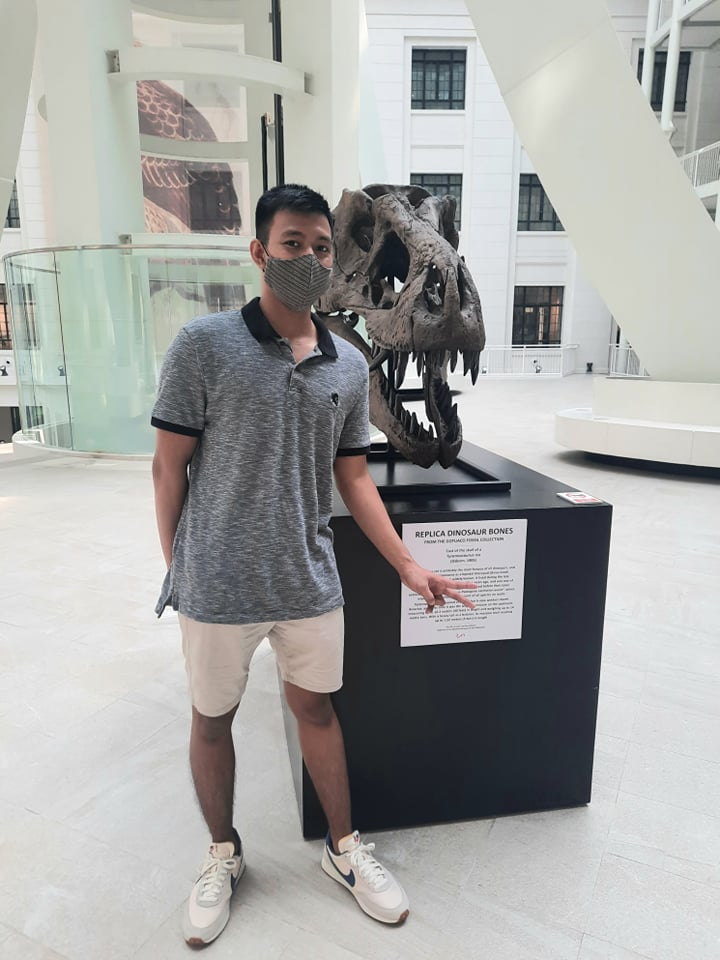
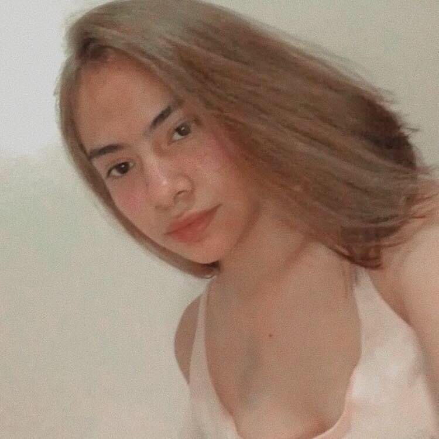
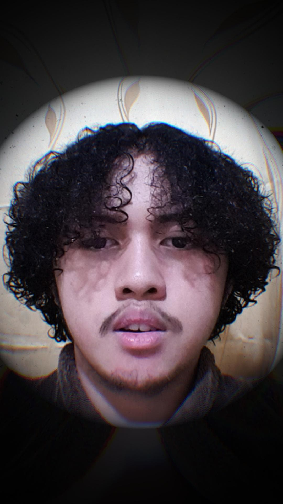
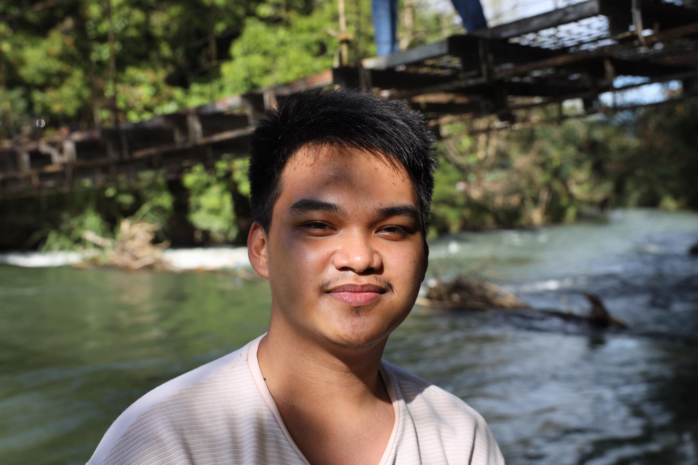
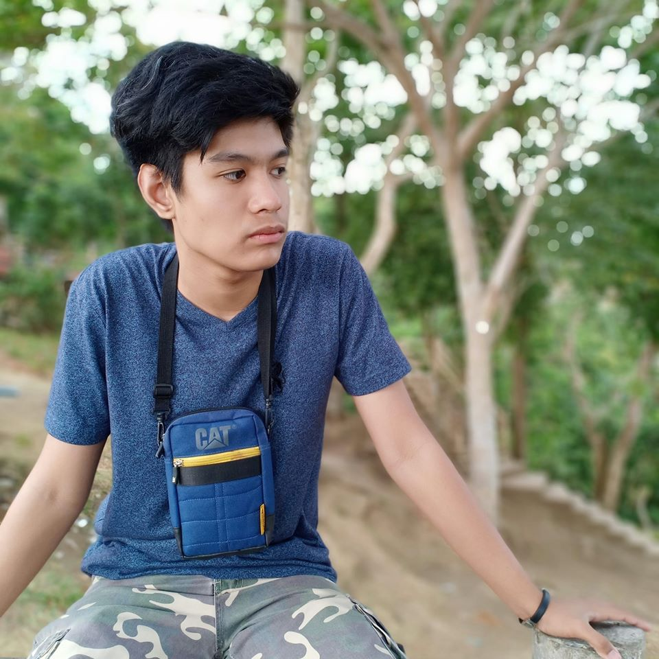
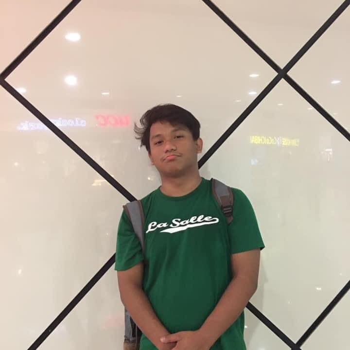
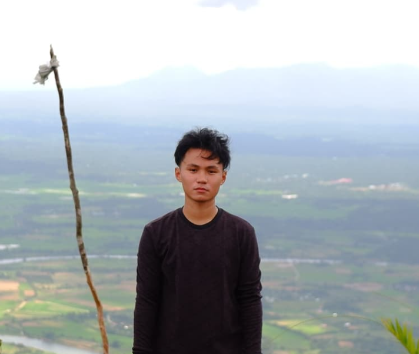

I am Lenard Carl L. Abonal and I want to be a software engineer. I was born on November 2, 2001 and lived at Santolan Pasig City.
What I usually do in my daily life is playing, coding, exercise, and studying. I always seek for improvement and bring the eagerness out in me to understand the lesson.
I know that I will have a tough journey ahead but I am prepared on the challenges ahead.

I am Angel Di Avecilla currently studying at University of the East and taking BS Information Technology. I was born on November 4, 2001 and raised in Alaminos Laguna. I enjoy watching netflix, doing tiktoks, playing tennis and badminton. I'm planning to go abroad after 2 years of work experience as System Analyst here in the Philippines after my graduation.

I am Jorben Lance Capitulo, a 2nd year college student majoring in Information Technology at University of the East Manila. Since I was a kid I always loved computers and the only reason back then, is that I loved playing computer games. When I grew up a little, I started learning about its hardware, its software and some other computer applications. Even though i took B.S.I.T in college, I still have different hobbies like drawing, writing, playing basketball, and listening to music.

I am James Esquivel, I am a self-starter with a strong desire to succeed. I thrive on a challenge and set objectives for myself on a regular basis so that I have something to work toward. I'm not content with mediocrity, and I'm continuously looking for methods to improve and attain excellence.

I am Jan Enrique V. Manuel, and I'm a college student studying information technology. Technology, programming, and multimedia editing are some of the things that interests me. I am dedicated and hardworking, especially when it comes to tasks that I enjoy. In the future I plan to start my own technological company and be able to travel the world.

I am John Gabriel Mangcoy 2nd year college studying Bachelor of Science in Information Technology at University of the East Manila. I am interested in playing games, watching movies and travelling. I have many skills to contribute including being a risk taker, competitive and dedicated.
I'm John Cesar Salazar and I am from the province of Isabela. I like outdoor activities. I also like using any social media platform(most of the time YouTube).

I am Ron Basti Gamo, I am competitive and dedicated. I thrive on challenges and continually set specific goals for myself so that I have something to aim for.